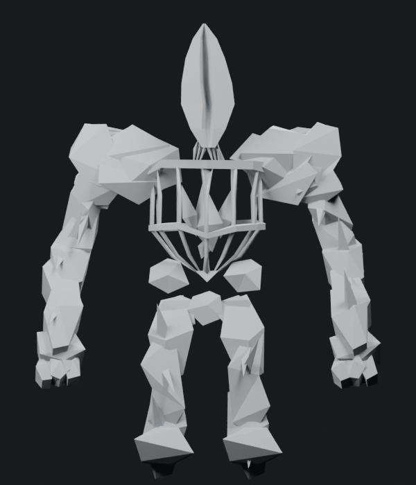
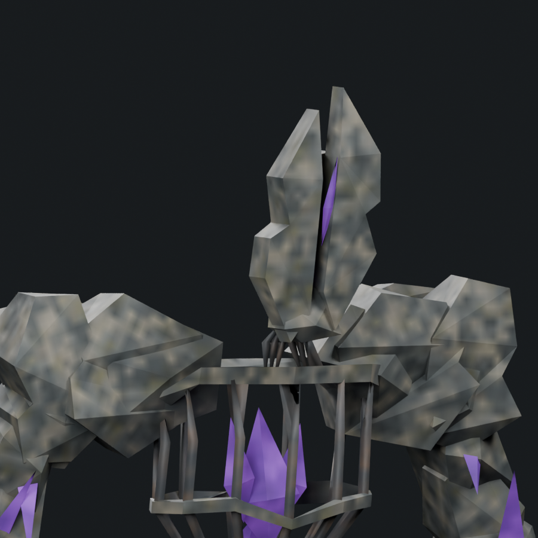
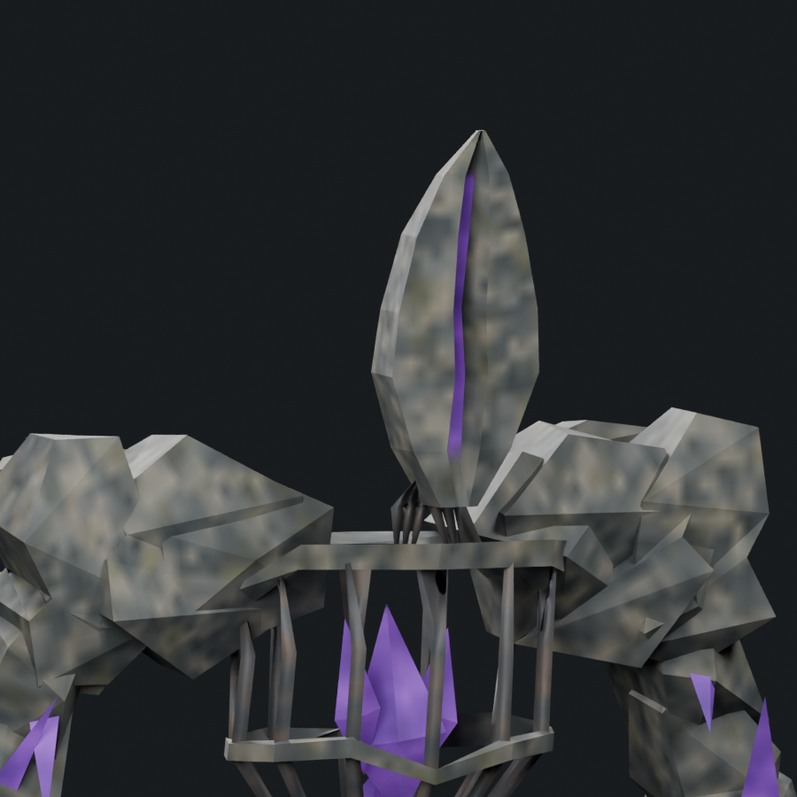
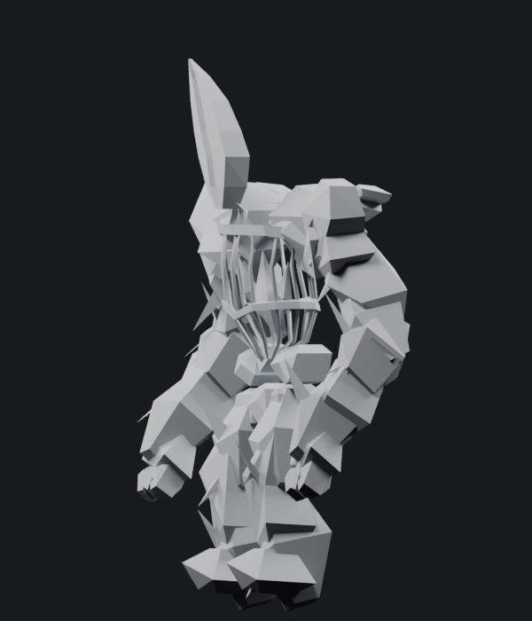

Corrected interpretation: the head is one crystal form with a recessed, beveled fissure. The previous separate halves and floating purple slivers are replaced by one connected closed shell. The exposed purple crystal is the deep floor of the crack, sharing geometry with its bevel walls and outer cortex. A continuous rear wall remains behind the fissure; it is not a through-slot or a gap between two independent uprights.
The six neck-rib ends are seated into this new head. Saved comparison against r11 finds zero coordinate difference in every retained body, limb, shoulder, torso and core component; only the head and its six neck end sections are changed.
1,792 triangles · native Stone Golem 1,200 · 1.493× · cap 1,800. The head replacement uses 108 triangles rather than the previous 116, saving eight. One mesh/material, four packed 512px maps, original eight bone identities and seven actions remain.






The saved head contains one connected closed component, 56 shared vertices and 108 triangles: 76 cortex/back/end triangles, 24 bevel triangles and eight recessed purple floor triangles. The floor sits behind the front lips and in front of the rear wall at every cross-section. All 76 existing supports pass rest plus 35 sampled action poses. Closing-face interior/edge checks pass 8,064 arm/digit, 14,112 limb-crystal, 2,016 upper-thorax and 1,512 neck/head samples across 36 poses, with zero measured outside distance.
This corrects the head interpretation; it does not establish final boss or 85% concept-match acceptance. Further fracture detail, core density, crest debris and material placement remain. Native every-frame deformation and live performance remain pending. Adequate boss tally remains 1/6. Updated outlook.
Editable Blender model · Skinned export · Head correction · Connected shell and crack-depth checks · Body compared with r11 · Mesh/export checks · Support checks · Neck/head closing faces · Camera direction · Source provenance